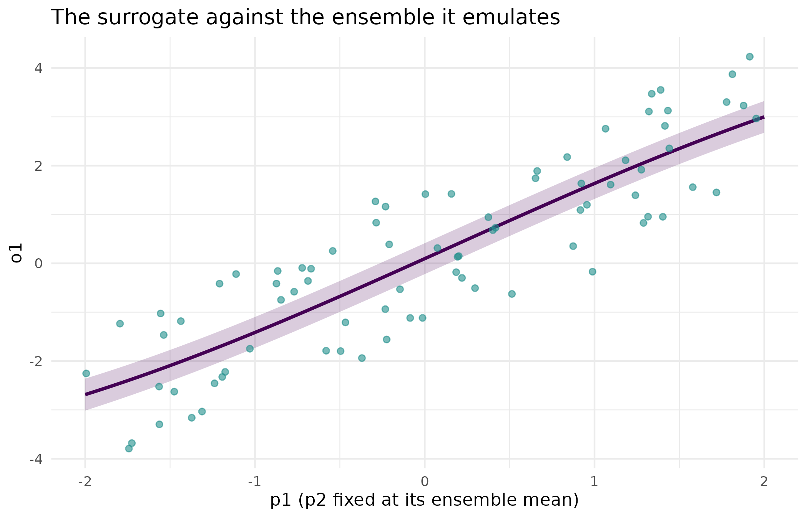

Why
quorum compares lenses, but a lens has to exist before it can be compared. The question this vignette answers is the one an analyst asks before any comparison is possible: I have an APSIM ensemble, a cheap emulator I would rather use than the simulator itself, and a koine pass – none of them came out of a flexyBayes fit, so how does each become something quorum can even read? The three seams below are the three answers, one on-ramp each.
What
A quorum_lens() compares two things that agree on their
shape: two sets of parameter draws, or two response curves over the same
grid. An APSIM ensemble, a surrogate’s predictive distribution and a
koine fit each start in a different shape of their own, so each needs
its own on-ramp into the lens vocabulary. fb_ensemble() and
verify_fb_ensemble() are the ensemble on-ramp (contract
C5): they canonicalise and check a set of parameter draws paired with a
simulator’s response, whatever produced it. fit_surrogate()
is the surrogate on-ramp (contract C7): it trains a fast,
distribution-preserving stand-in for an expensive simulator, so a
mechanism lens does not have to pay the simulator’s cost on every draw.
emit_koine() and koine_status() are the koine
on-ramp (contract C3): koine’s own battery battery, wrapped so its
opinion reaches the same canonical parameter names a hub fit uses. None
of the three verbs below builds or compares a lens directly – that is
A quorum of lenses on Study A0 and Adding a lens’s job
– this vignette only gets each estimate through its own door.
Do
Seam 1 – ingest a simulation ensemble (contract C5)
A simulation ensemble is a set of parameter draws paired with the
simulator’s response to each draw: a design matrix and a row-aligned
output matrix. fb_ensemble() is the canonical container;
as_fb_ensemble() (not called directly here) coerces a
conforming producer – a PESTO calibration manifest, a raw
apsimx run, a saved file – into that same shape, so a
mechanism lens never has to know which producer it came from. The
parameter-to-output map below is synthetic, standing in for whatever an
APSIM run would have produced.
set.seed(20260902)
g <- rbind(c(1.5, -0.8), c(0.4, 1.1)) # 2 outputs x 2 params, for illustration
theta <- cbind(p1 = runif(80, -2, 2), p2 = runif(80, -2, 2))
y <- theta %*% t(g) + matrix(rnorm(160, 0, 0.1), 80, 2L)
colnames(y) <- c("o1", "o2")
ens <- fb_ensemble(
params = as.data.frame(theta),
outputs = as.data.frame(y),
provenance = list(source = "raw")
)
verify_fb_ensemble(ens)
#> $ok
#> [1] TRUE
#>
#> $message
#> [1] ""verify_fb_ensemble() is the conformance check: it fails
loudly, naming the first violation, rather than letting a malformed
ensemble reach a surrogate fit silently.
Seam 2 – emulate the simulator (contract C7)
fit_surrogate() trains a fast stand-in for the
simulator: a map from parameters to outputs that reports a predictive
distribution, not a point, so a downstream calibration step can
account for emulator error instead of treating the surrogate as exact.
The reference method, "rff", is a random-features Bayesian
linear model. Writing
for the random Fourier
feature map of a parameter vector
(Rahimi and Recht, 2007), the predictive distribution at a new point
is Gaussian with
where and are the posterior mean and covariance of the linear weights and is the noise precision; both the prior precision and are set by MacKay evidence maximisation rather than fixed by hand (Bishop, 2006, secs. 3.3, 3.5). That evidence-optimised is what makes the reported standard deviation calibrated instead of an arbitrary ridge parameter.
sur <- fit_surrogate(ens)
pred_point <- predict(sur, data.frame(p1 = 1, p2 = -1))| o1_mean | o1_sd | o2_mean | o2_sd | |
|---|---|---|---|---|
| o1 | 2.296 | 0.159 | -0.704 | 0.162 |
p2_fixed <- mean(theta[, "p2"])
sweep_grid <- data.frame(p1 = seq(-2, 2, length.out = 100L), p2 = p2_fixed)
pred_sweep <- predict(sur, sweep_grid)
band_df <- data.frame(
p1 = sweep_grid$p1,
mean = pred_sweep$o1_mean,
lo = pred_sweep$o1_mean - 2 * pred_sweep$o1_sd,
hi = pred_sweep$o1_mean + 2 * pred_sweep$o1_sd
)
ens_df <- data.frame(p1 = theta[, "p1"], o1 = y[, "o1"])
ggplot2::ggplot(band_df, ggplot2::aes(x = p1)) +
ggplot2::geom_ribbon(
ggplot2::aes(ymin = lo, ymax = hi), fill = "#440154", alpha = 0.2
) +
ggplot2::geom_line(ggplot2::aes(y = mean), colour = "#440154",
linewidth = 1) +
ggplot2::geom_point(
data = ens_df, ggplot2::aes(x = p1, y = o1), colour = "#21908C",
alpha = 0.6, size = 1.6
) +
ggplot2::labs(
x = "p1 (p2 fixed at its ensemble mean)", y = "o1",
title = "The surrogate against the ensemble it emulates"
) +
ggplot2::theme_minimal()
The surrogate’s predictive mean and +/- 2 SD band as p1 sweeps with p2 fixed at its ensemble mean (line and ribbon), against the ensemble’s own training outputs for o1 (points). The surrogate never sees the points directly at predict time – it interpolates the distribution it was fitted to.
Richer emulators – PESTO’s Gaussian process, kernR’s conditional mean
embedding – register through register_surrogate() and are
consumed through exactly this same predict() contract; see
Distribution-preserving surrogates for the full loop, including
inversion against observed data and a posterior-predictive check of
whether the surrogate distorted the output distribution.
Seam 3 – triangulate with koine (contract C3)
koine is a stacked battery of marginal-likelihood and robust lenses,
wrapped so its opinion reaches the hub’s own canonical parameter names –
an independently-derived fourth opinion that lens_koine()
(see Adding a lens) reaches directly, and that
flexyBayes::triangulate() compares against the Bayesian
backends inside the hub itself. emit_koine() carries the
model into koine’s own corner: a population GLM with either a single
random intercept or – from koine 0.3.0 – the multi-environment-trial
structure of two crossed or nested random intercepts,
(1 | variety) + (1 | trial), which is the shape a variety
trial actually has. Anything richer returns a typed abstention rather
than a wrong fourth opinion. koine_status() reports whether
the slot is currently active on the installed koine version, without
requiring koine to be installed to load this package:
status <- koine_status()
status$activated
#> [1] TRUERead
The predictive table above reports the surrogate’s mean and SD at one
point; both are finite and the SD is strictly positive, which is what a
distribution-preserving prediction requires – a surrogate that reported
zero uncertainty anywhere inside its design would be silently claiming
certainty the training ensemble does not support. The figure shows the
same thing across a sweep: the band tracks the scatter of training
points, widening only where the points themselves thin out.
status$activated reports TRUE on this build, meaning the
koine fourth opinion is live and emit_koine() will attempt
a real fit rather than decline outright; a build without a compatible
koine install would report FALSE here, and every claim in
this vignette about koine would still hold as a description of the seam,
just not as something this render exercised.
Limits
None of the three chunks above compares two lenses against each other – that comparison, and the independence and agreement machinery behind it, is what Adding a lens and A quorum of lenses on Study A0 exercise. The ensemble here is synthetic, standing in for an APSIM run so this vignette needs no external binary and no network call; a real ensemble carries the same shape but a different, and generally larger, predictive uncertainty once the surrogate has to interpolate a genuinely nonlinear response rather than the near-linear toy used here.
What to read next
Distribution-preserving surrogates walks the full seam-2
loop end to end – ingest, fit, read the distribution, invert, and check
– on a small worked example with figures. A quorum of lenses on
Study A0 and Adding a lens pick up where this vignette
stops: turning an ingested estimate into a lens and comparing it against
another. ?fit_surrogate, ?fb_surrogate_ies,
and ?fb_surrogate_ppc document each verb’s arguments and
return value.
Reproduce
Seed 20260902 for the synthetic ensemble. Package
versions follow.
sessionInfo()
#> R version 4.6.1 (2026-06-24)
#> Platform: x86_64-pc-linux-gnu
#> Running under: Ubuntu 24.04.5 LTS
#>
#> Matrix products: default
#> BLAS: /usr/lib/x86_64-linux-gnu/openblas-pthread/libblas.so.3
#> LAPACK: /usr/lib/x86_64-linux-gnu/openblas-pthread/libopenblasp-r0.3.26.so; LAPACK version 3.12.0
#>
#> locale:
#> [1] LC_CTYPE=C.UTF-8 LC_NUMERIC=C LC_TIME=C.UTF-8
#> [4] LC_COLLATE=C.UTF-8 LC_MONETARY=C.UTF-8 LC_MESSAGES=C.UTF-8
#> [7] LC_PAPER=C.UTF-8 LC_NAME=C LC_ADDRESS=C
#> [10] LC_TELEPHONE=C LC_MEASUREMENT=C.UTF-8 LC_IDENTIFICATION=C
#>
#> time zone: UTC
#> tzcode source: system (glibc)
#>
#> attached base packages:
#> [1] stats graphics grDevices utils datasets methods base
#>
#> other attached packages:
#> [1] quorum_0.1.0.9000
#>
#> loaded via a namespace (and not attached):
#> [1] gtable_0.3.6 jsonlite_2.0.0 dplyr_1.2.1
#> [4] compiler_4.6.1 tidyselect_1.2.1 Rcpp_1.1.2
#> [7] jquerylib_0.1.4 systemfonts_1.3.2 scales_1.4.0
#> [10] textshaping_1.0.5 yaml_2.3.12 fastmap_1.2.0
#> [13] kernR_0.10.0.9000 ggplot2_4.0.3 R6_2.6.1
#> [16] labeling_0.4.3 generics_0.1.4 knitr_1.52
#> [19] tibble_3.3.1 desc_1.4.3 bslib_0.12.0
#> [22] pillar_1.11.1 RColorBrewer_1.1-3 rlang_1.3.0
#> [25] cachem_1.1.0 xfun_0.62 fs_2.1.0
#> [28] sass_0.4.10 S7_0.2.2 otel_0.2.0
#> [31] cli_3.6.6 withr_3.0.3 pkgdown_2.2.1
#> [34] magrittr_2.0.5 PESTO_0.11.1.9000 digest_0.6.39
#> [37] grid_4.6.1 lifecycle_1.0.5 vctrs_0.7.3
#> [40] evaluate_1.0.5 glue_1.8.1 data.table_1.18.6.1
#> [43] farver_2.1.2 ragg_1.5.2 rmarkdown_2.32
#> [46] tools_4.6.1 pkgconfig_2.0.3 htmltools_0.5.9References
Bishop, C. M. (2006). Pattern Recognition and Machine Learning. Springer. Sections 3.3 (Bayesian linear regression) and 3.5 (the evidence approximation).
Rahimi, A. and Recht, B. (2007). Random features for large-scale kernel machines. Advances in Neural Information Processing Systems, 20.